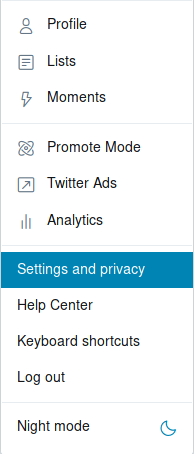
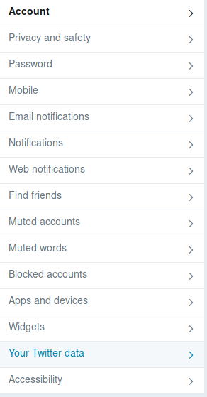

1.1 Go to your Twitter account, click on Settings and privacy
1.2 Then click on Your Twitter data
1.3 Finally, enter your password and request your data.
PS: They will send you an email and a push notification when it's ready.
2.1 After downloading, all you have to do is extract (it comes in a .zip file).
3.1 Now you have to send your tweet.js file using the Open File button at the end of the page.
3.2 The file is located at the folder where you extracted the .zip
3.3 After seeing "File Opened" you can play around to see some statistics!